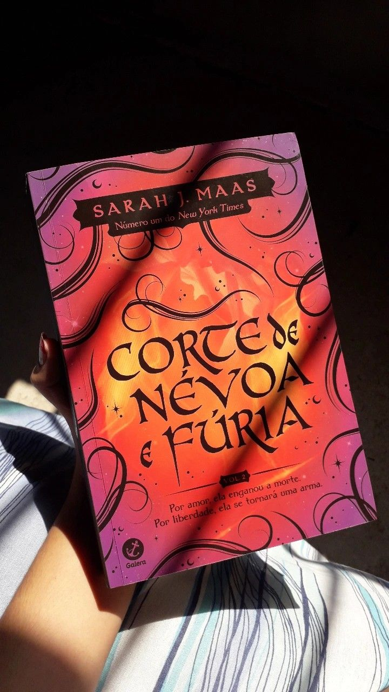
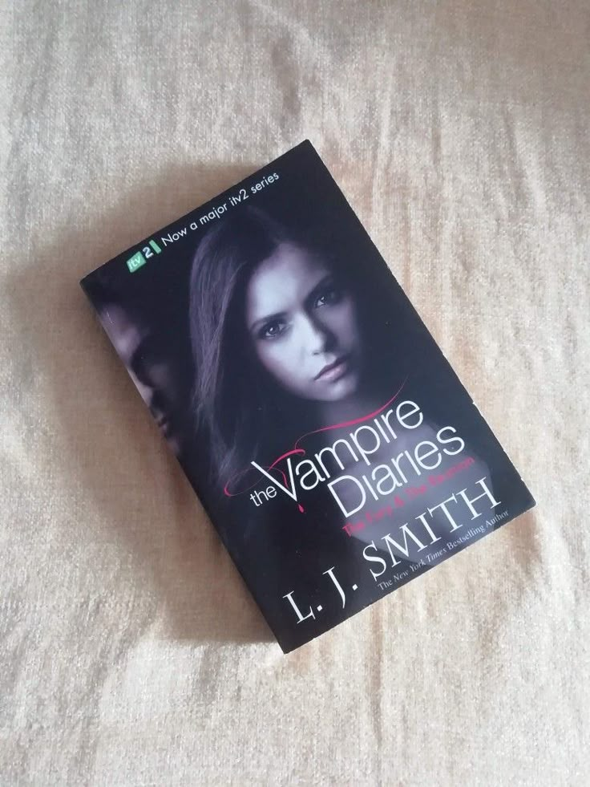

A Corte de Névoa e Fúria
Feyre precisa lidar com as consequências de suas escolhas enquanto descobre novos poderes e um destino que pode mudar Prythian para sempre.

O Cemitério
Após uma tragédia familiar, uma descoberta sombria revela que alguns retornos podem ter consequências assustadoras.

Diários de um Vampiro: O Despertar
Elena vê sua vida mudar quando dois irmãos vampiros chegam à cidade e despertam sentimentos e perigos inesperados.